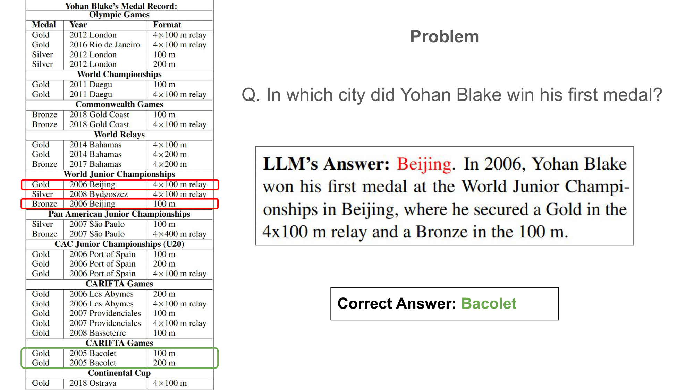
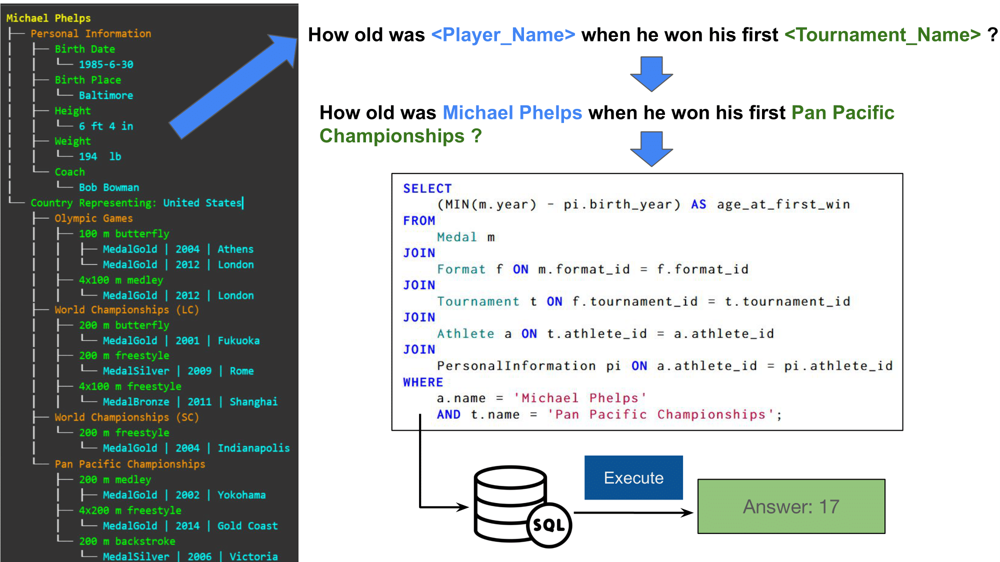
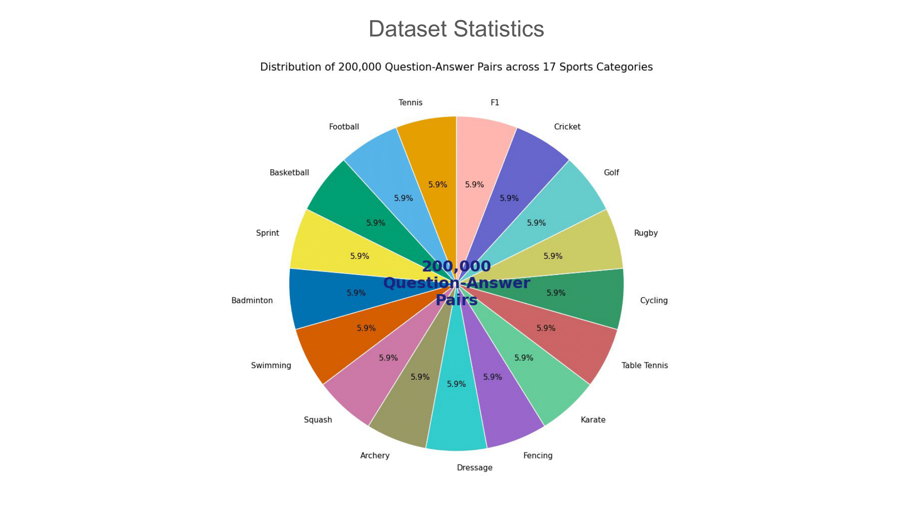
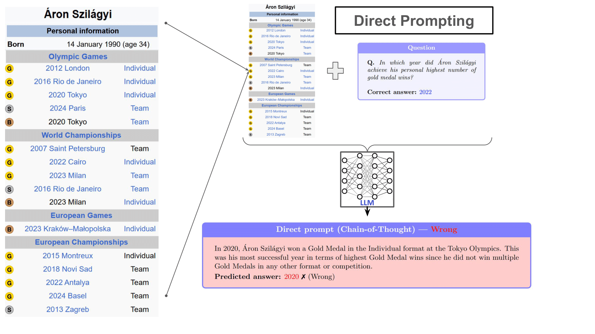
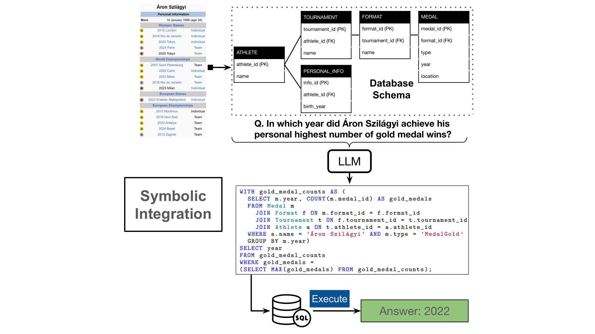
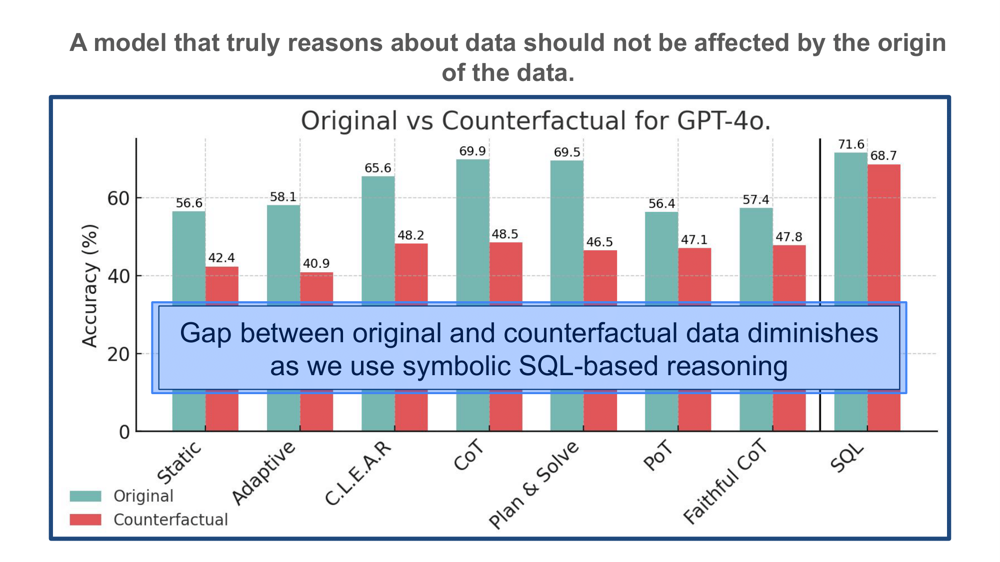
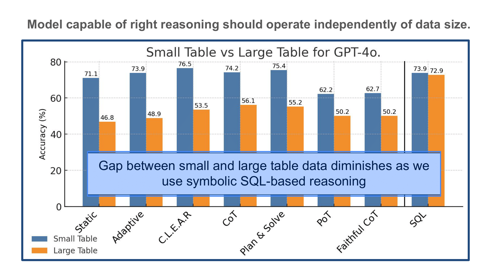
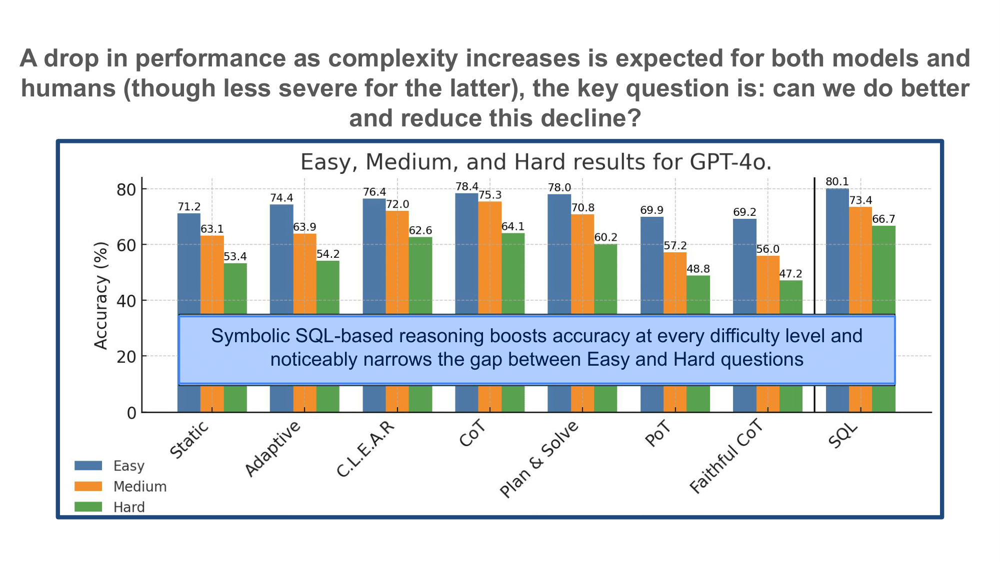

Large Language Models (LLMs) shine at free‑form text generation, yet stumble when asked to reason over temporal, semi‑structured tables. Simple “read the table & answer” prompts lead to brittle performance—especially when we tweak facts, enlarge the table, or craft multi‑hop questions.

Example question where direct prompting hallucinates while symbolic SQL reasoning succeeds.
TEMPTABQA‑C: A Controlled Benchmark
To diagnose these weaknesses we built TEMPTABQA‑C—over 200k Q&A pairs drawn from Wikipedia infoboxes, stored in a relational schema and labeled across three axes:
Original vs. Counterfactual (we perturb facts to test memorization);
Small vs. Large tables;
Easy → Hard reasoning difficulty.

Automatic pipeline: from infobox ➞ knowledge‑graph ➞ relational DB ➞ templated questions.
Dataset Statistics

Distribution of 200k questions across splits.
Direct Prompting vs Symbolic Integration
Direct Prompting
Feed the entire table + question into the LLM and hope Chain‑of‑Thought (CoT), Plan‑&-Solve, or PoT implicitly reasons. In practice the model memorizes patterns, is sensitive to row order, and slows down on big tables.

Raw table ➞ free‑text rationale.
Symbolic Integration
Hide the data, expose only the schema. The LLM must output an SQL query, which we execute to get the answer. The query is verifiable, data‑blind, and executes in similar time even for huge tables.

Schema ➞ SQL ➞ exact answer.
Key Findings
1 · Robustness on Counterfactual Data
When we swap names, ages, or medal counts (counterfactuals), direct prompts drop by ≈15 EM. SQL prompting shrinks the gap to <3 points.

SQL almost erases the Original → Counterfactual gap.
2 · Impact of Table Size
Performance of direct prompts plummets on large tables (‑25 EM). SQL is practically size‑invariant (<3 EM difference) because the DB engine does the heavy lifting.

Accuracy vs. table length.
3 · Effect of Question Complexity
SQL reasoning narrows the Easy–Hard gap by 10 EM and lifts accuracy at every level.

Symbolic integration stays strong as reasoning difficulty rises.
Cite Us
@inproceedings{kulkarni-etal-2025-llm,
title = "{LLM}-Symbolic Integration for Robust Temporal Tabular Reasoning",
author = "Kulkarni, Atharv and
Dixit, Kushagra and
Srikumar, Vivek and
Roth, Dan and
Gupta, Vivek",
editor = "Che, Wanxiang and
Nabende, Joyce and
Shutova, Ekaterina and
Pilehvar, Mohammad Taher",
booktitle = "Findings of the Association for Computational Linguistics: ACL 2025",
month = jul,
year = "2025",
address = "Vienna, Austria",
publisher = "Association for Computational Linguistics",
url = "https://aclanthology.org/2025.findings-acl.1022/",
pages = "19914--19940",
ISBN = "979-8-89176-256-5",
abstract = "Temporal tabular question answering presents a significant challenge for Large Language Models (LLMs), requiring robust reasoning over structured data{---}a task where traditional prompting methods often fall short. These methods face challenges such as memorization, sensitivity to table size, and reduced performance on complex queries. To overcome these limitations, we introduce TEMPTABQA-C, a synthetic dataset designed for systematic and controlled evaluations, alongside a symbolic intermediate representation that transforms tables into database schemas. This structured approach allows LLMs to generate and execute SQL queries, enhancing generalization and mitigating biases. By incorporating adaptive fewshot prompting with contextually tailored examples, our method achieves superior robustness, scalability, and performance. Experimental results consistently highlight improvements across key challenges, setting a new benchmark for robust temporal reasoning with LLMs. Code and TEMPTABQA-C dataset: https://github.com/CoRAL-ASU/llm_symbolic
}